概 述
《这一身》
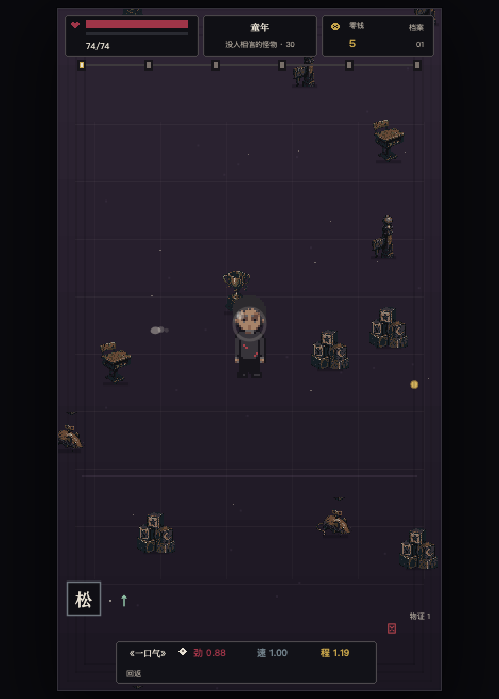
实机 · 战斗
类型 人生构筑 roguelike · 自由走位 · 自动攻击 画面 竖屏 360×640 像素 操作 单摇杆移动；攻击自动索敌 平台 抖音互动空间（H5） 一局 六章：童年 → 少年 → 青年 → 成年 → 中年 → 暮年 攻击 全程只有《一口气》一种 AI 出生档案与命运事件实时生成，无本地兜底 终局 最终 Boss 不可击杀；归还全部道具后由玩家主动放下 版本 V0.4「人生构筑 · 自由走位」
《这一身》是一款竖屏 AI 人生构筑 roguelike。 一局就是一生：从还没上学的年纪一直打到病房，而你从头到尾只有一个攻击——《一口气》。它想说的只有一句话：事情是改不了的，怎么做是可以选择的。
每一局的出生都由 AI 现场生成：家庭、地域、外号、童年经历，没有预设主角，也没有本地兜底档案 ——开局那一页每次都不一样，而且这份档案会被之后的命运一直记着、一直续写。遇到的怪，是这个年纪真正会遇到的困难：哭蛾、红叉、未接来电、打包的纸箱；掉下来的道具，是困难留在身上的东西：同桌的修眉刀、断掉的脊梁骨、已经注销的旧工牌。
事情发生时不能重抽，只能选怎么回应：咽下，吐出，或者亲口说一句 。回应会变成道具，道具真的穿在身上——书包让人驼背，雨衣挡住雨，旧伤改变站姿；同一件东西同时改写外形、数值和那一口气的形状，故事、美术和打法共用同一个结果 。
终局不是击杀。最后一关的收灯人打不死：他提着灯，把你身上的道具一件一件收走，每收走一件，闪回一段；收到空为止，画面停住——最后那一下「放下这一口气」 ，必须玩家自己按。
6 章 · 一局一生
77 件道具
38 种敌怪与 Boss
21 种弹体形态
12 个奥义组合
92 条预生成配音
以上均为运行时真实资产，数目由 validate:wiki 等门禁逐项核对，与游戏包内一致。
01 故事 · 一局就是一生没有世界末日，也没有异世界。故事就是一个普通男人从出生到老去：关卡是他慢慢长大，怪物是他一路遇到的困难，道具是困难留下来的东西。 地图不切场景——同一片地面跟着年龄一起变旧。
02 玩法 · 一辈子只有一个攻击主角没有武器栏，从第一秒到最后一秒都只吐出《一口气》。所有道具做的是同一件事——改写这同一发攻击 的形状、轨迹、材质、节奏和命中反应。下面是全部 21 种运行时弹体形态 ——四态是《一口气》本身的凝实成长，十七种是被具体道具改写后的样子。
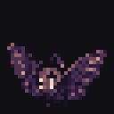
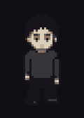
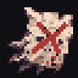
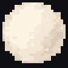
→
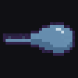
雾，变成了雨
01 出生 AI 现场写出这个人：家庭、外号、开局属性，没有兜底档案。
02 走位活下去 你只管走，《一口气》自动索敌；怪是这个年纪真正的困难。
03 命运牌 事情已经发生，不能重抽——咽下，还是吐出？
04 回应穿上身 选择变成道具：雨衣真的披上了，站姿真的变了。
05 一口气被改写 同一发攻击，被雨衣改成了雨。所有道具都在改写它。
06 走到终局 收灯人把这一身一件件收走。最后一下，由你自己按。
基础 · 呼吸凝实四态 没穿任何道具时的《一口气》；凝实度随伤害、重量与锋利度生长，从无形的雾长成实心珠光
态一 · 无形雾 态二 · 聚拢 态三 · 半凝 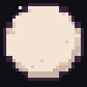
态四 · 实心珠光
被经历改写的十七种形态 每一格都是运行时真实弹体，图下写的是把它改成这样的那件道具
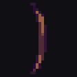
床底下的木剑 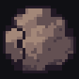
装满石头的书包 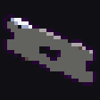
同桌的修眉刀 校服上掉下来的纽扣 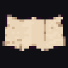
前桌的情书 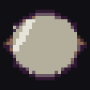
裂了一边的眼镜 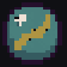
当年最强的那颗弹珠 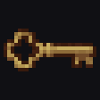
出租屋唯一的钥匙 父亲的雨衣 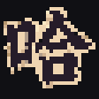
五个哈 我一直在哭 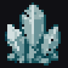
小卖部的冰柜 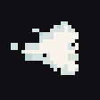
冬天呵在玻璃上的字 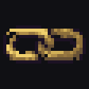
全家帮砍仍差一刀的链接 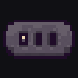
把名字卖掉的合同 领导撤回的六十秒语音 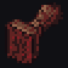
对方已开启朋友验证
形态与道具的对应关系取自 src/projectile-item-signatures.ts；两件道具同时在身上时按优先级与协同规则合成，详见卷五 ·《一口气》 。
你不能决定的 出生、发生的事件、时间向前、这一阶段会遇到的困难。
你始终可以决定的 往哪里走、先面对谁、怎样回应命运、背上什么、放下什么。
03 AI 在这里做什么
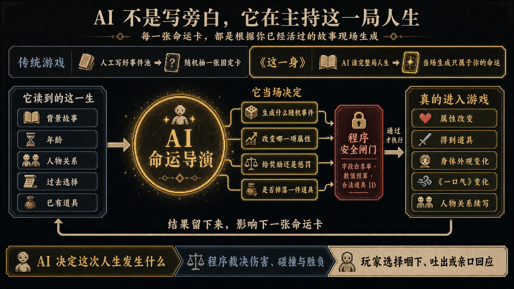
先看懂这一句： AI 不是替游戏写旁白，而是在程序允许的范围里主持每一局人生。
AI 原生特色玩法 · 命运档案柜
先看玩法，想知道怎样做到再拉开抽屉。默认展开的是 AI 真正进入随机系统的地方。
01
千人千生 外号和童年不只被写出来，也会改变开局属性 出生档案
程序先掷定家庭底色、地域和叙事基调，AI 再写出童年经历、外号及其来历，并从故事里选出有根据的出生特质。程序把特质换算成生命、伤害、射速、射程、治疗、零钱或“咽下”的能力——这个人从第一秒起，打法就和上一世不同。
① AI 写出这个人 家庭、童年、外号与外号来历
② 从故事选特质 只能选择能从经历里读出缘由的白名单特质
③ 程序换算数值 特质 ID 对应固定且可审计的属性变化
④ 开局已经不同 初始生存、攻击与回应方式随出生改变
“有人一直留饭” 生命 +5 · 首次命运伤害 −3
“总睡在客厅” 射程 ×1.08 · 生命 −6
不是让 AI 随口加数： 故事决定选哪个出生特质；程序决定这个特质究竟加减多少。
02
命运现编 不是从固定事件池抽一张卡 命运卡
AI 读取这一局的背景故事、年龄、人物关系、过去选择和已有道具，当场生成下一件现实事件。上一次留下的人和物，会成为下一次事件的起因。
背景故事 年龄 人物关系 过去选择 已有道具
03
AI 主持随机 它不仅出题，也决定这一题在游戏里留下什么 核心卖点
AI 在规则引擎给出的白名单和预算内，决定本次事件、属性方向、奖励或惩罚，以及是否得到或失去一件候选道具。
随机事件 这一刻究竟发生什么
属性变化 伤害、射速、射程、弹宽、移速或弹速
奖励 / 惩罚 数值、效果，或者什么都没有
道具去留 从合法候选中获得，或失去已有物证
边界： AI 决定这次给什么；程序检查能不能给、数值是否公平，并负责真正结算。
04
亲口说 · 第三句话 不必只从作者写好的两个选项里挑 自由回应
事情已经发生后，玩家可以写下 24 字以内的一句话，并亲自决定是“咽下地说”还是“吐出来说”。AI 再把原话编译成可结算的现实后果。
① 玩家写原话 不是预设台词，最多 24 字
② 玩家定方向 咽下地说 / 吐出来说
③ AI 写回执 回应名、现场结果、五毒与奖惩
④ 程序结算 属性、道具、效果或只留下记忆
这不是聊天框，而是第三条可以进入构筑的选择。回执在战斗后台生成；你说过的原话会被记住，后续命运与最终封卷都必须承认它。
机制互相咬合： 穿着“把名字卖掉的合同”时，玩家会失去“亲口说”的资格——它是正式玩法，不是网页外挂。
05
这一生会记得 结果留下来，影响下一张命运卡 状态回流
每次咽下、吐出和亲口说都会写入本局状态。旧人物会回来，旧物会再次出现，属性与身体继续变化；终局时，AI 再把出生、命运和玩家原话串成这一生的封卷。
命运回执 人物关系 剧情残留 后续事件 人生封卷
实现原理 · 为什么 AI 能决定随机内容，却不能破坏游戏公平？
生成结果必须经过固定 JSON 结构、字段白名单、数值预算、合法道具 ID、现场连续性检查与独立审稿。伤害、碰撞、掉落概率、Boss 招式和胜负始终由确定性代码裁决。
玩家实际能看见 AI 的四个地方： 开局的出生登记页、章节间的命运牌、玩家亲口回应后的现场结果，以及后续事件对前文人物与旧物的继续引用。上面档案柜里的五条，逐条写明了它们各自怎么运作。
AI 不负责： 伤害数值、掉落、碰撞、Boss 判定与战斗胜负。它只能在程序给出的白名单和预算内写人生，规则仍由代码裁决。
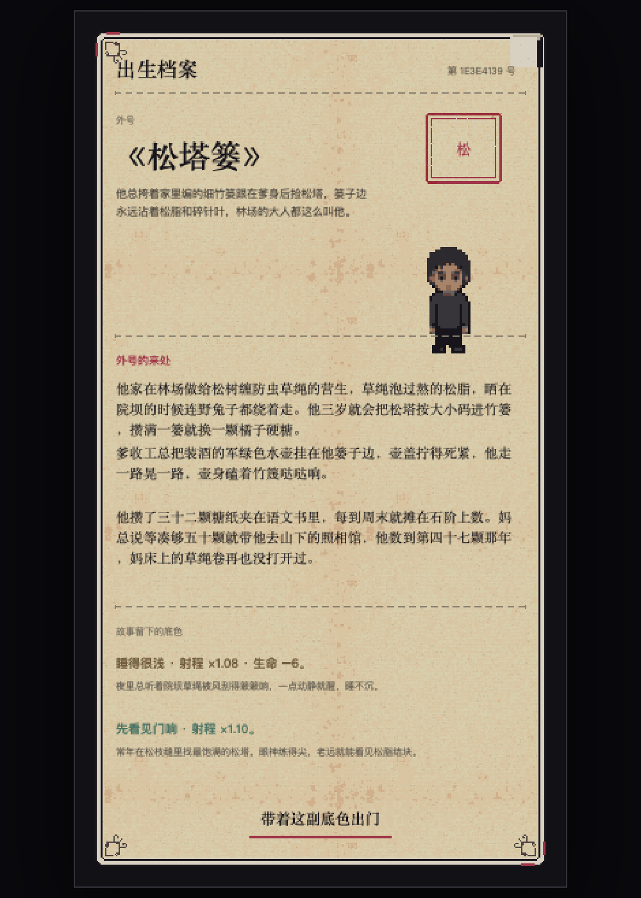
开局第一页 · 这一份档案由 AI 现场生成，离线时没有兜底人物可以顶上
04 设计理念
事情是改不了的，怎么做是可以选择的。
《这一身》不是讲一个人靠努力战胜所有困难，而是讲一个普通人如何被经历一点点塑形：有些选择救过他，也让他付出代价；有些伤疤后来变成能力，却不代表伤害本身值得感谢。玩家真正操纵的不是命运，而是面对命运时的姿态。
“命”怎样体现 出生与现实事件先发生，不能读档重抽成更好的人生；时间也只会向前。
“选择”怎样体现 自由走位决定先面对谁，命运牌决定咽下还是吐出，道具决定继续背什么。
“放下”怎样体现 终局不是证明伤疤让人更强，而是逐件脱下这一身，承认活过以后仍可以不再背着。
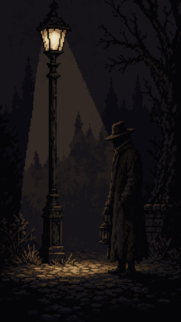
终局定格 · 收灯人不可击杀，通关靠把这一身逐件还回去
05 新意 · 生成的不是台词，是可玩的经历
AI 生成的出生和事件会进入本局状态，影响后续命运怎样续写；它不是战斗外的一段装饰文本。
叙事结果会被编译成受控机制，再变成身体外观与《一口气》的变化——故事、数值、美术和打法共用同一个结果 。
“事情改不了，怎么做可以选择”不只是一句主题：命运牌体现事情，走位体现做法，道具体现选择留下的身体后果。
构筑的高潮不是越来越满，而是终局被逐件剥下；最终胜利不是击杀收灯人，而是主动放下最后一口气。
06 和常见构筑游戏的区别比较 常见构筑游戏 《这一身》
攻击 不断获得新武器 一辈子只有《一口气》，所有经历共同改写它 随机内容 抽数值、房间或固定事件 AI 按本局人生状态续写出生与命运 道具 主要提供强度与流派 同时是记忆、代价、身体变化和战斗规则 关卡 彼此独立的地图或章节 同一张世界连续老去，一局就是一生 结局 击杀最终 Boss、完成构筑 最终 Boss 不可杀，玩家靠归还构筑并主动放下通关
07 游戏资源总览下面每一张都是这个项目真实产出的资产。悬停看名字，点小标题进对应分卷看逐条词条。
170 个现役美术资产
2024 张生成稿里筛出来
354 个循环动图
164 帧 Boss 专属招式
12 张实机屏幕
45 个音效与配乐
77 件道具全套图标与体现图
现役美术全部打进 8MB 包内；生成稿、候选与被淘汰版本留在仓库里，可见于美术生产档案 。
52 个敌怪待机循环 按六章与终局的真实遭遇顺序归档；每只怪五态动画，这里只放待机那一态
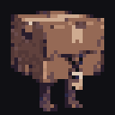
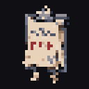
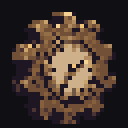
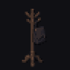
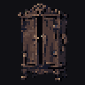
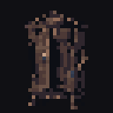
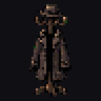
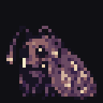
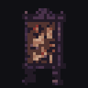
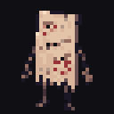
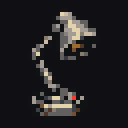
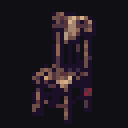
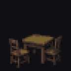
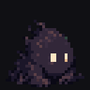
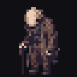
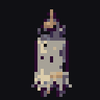
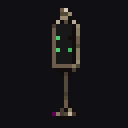
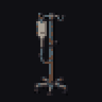
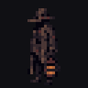
41 条 Boss 专属招式 随小 Boss、大 Boss 与终 Boss 词条陈列；每招独立四帧，部分已升到八帧
77 件道具 · 可交互物证池 五档品质，边框颜色即品质；点击任意图标展开完整详情卡
点开任意一件：记忆、正负效果、主角体现、弹体改变与叠加裁决都在卡里
77 件道具 · 主角体现图（四姿态） 每件道具穿上身之后，主角变成什么样；悬停放大，缩略只露四姿态中的正面一态
12 张实机屏幕 出生 · 命运牌 · Boss · 两扇门 · 当铺 · 名册 · 收灯 · 终局 · 断点恢复
开场 · 出生档案由 AI 现场生成，没有兜底人物 命运牌 · 事情已经发生，只能选咽下或吐出 章节 Boss 战 · 战场会变成这个 Boss 的现实现场 留灯间 · 被爱过的证据，三选一 里屋 · 强力遗物都带着代价 没有招牌的当铺 · 怪潮间隙路边出现 上一世的留灯间 · 名册记得上一局那个人，这一局还能把他的东西拿回来 《灯下》· 他手里那盏灯是场上唯一的光源 《收灯》· 灯光圈追着你，照满就收走一件 终局 · 逐件归还之后，由玩家自己放下 人生档案封卷 · 失败也会被记进名册 断点恢复 · 中途断连不丢这一生
2024 张生成与淘汰稿 随机抽 240 张：每一件现役资产背后都有十几版没被选中的——image2 生图基底 → 绿幕键控 → 程序规整 → 实机比例复核
08 分类图鉴下面五本是逐条词条页，每个词条带实机循环动图；本页往下是设计手册正文。
第一次读百科： 上面七节读完就能明白这是个什么游戏。再往下按「一口气 → 命运牌 → 道具志 → 怪物图鉴」的顺序看；机制账本与各卷末尾的图集用于查细节，不必从头读到尾。
卷 一
根命题
实机 · 他可以跑，但逃不出这一生——走位，就是「怎么做」
整个游戏立在一句话上。其余一切——自由走位、命运牌、穿戴道具、唯一攻击——都是这句话的推论。
这既是百科，也是设计手册
本卷同时承担两种职责，而且不能拆成互不相干的两份文档：玩家与创作者先从百科层 读懂这一生发生过什么、某件普通东西为什么会留在身上；程序、美术、叙事与数值再从设计层 找到它必须怎样运作、怎样显形、怎样与别的经历发生组合。
每个主题都要先说人话，再写规则。百科正文不能被参数淹没，设计表也不能只靠气氛代替实现条件；如果玩家读不懂，它不是好设定，如果团队做不出来，它也不是好手册。文中的“正典”“待审核”“运行时原型”“未接入”是生产状态，不得混写。
事情是改不了的，
—— 作者原话 · 2026-07-18 开发实录
它有两个更完整的表达，分别面向玩家与面向系统：
发生什么，你说了不算。
—— 命运牌系统核心句
由此推出全部设计：关卡 是男人慢慢长大；怪物 是他从降生到老死遇到的各种困难；道具 是困难被他背上身之后的形态；唯一的攻击 被这一生反复揉捏。玩家操纵的从来不是英雄，而是一个普通男人的反应与取舍 。
卷 二
三条设计红线
实机 · 出生登记页：这份档案每一局都是 AI 现写的
作者在开发实录中明确划下、任何后续开发不得违背的三条边界。把它们当 bug 修，就是违背正典。
壹
出生绝不允许兜底人物
每一局的出生档案必须是 AI 真实生成的一生。代码中的出生案例只是给 AI 看的风格参照，绝不能在生成失败时被塞进玩家的这一局。AI 实时生成一个前所未有的人生，正是这款游戏"突破传统游戏的一个点"。
出处：不要有兜底人物出现了。兜底的案例只是给 AI 看的，每一次都应该是 AI 生成的。
贰
出生要千奇百怪
穷人、富人、普通人、古怪的家庭——世界上的人本就千奇百怪，出生池不能塌缩成单一叙事。数值由预算控制，但人生的解释必须无限。
2026-07-19 工程落地：轮盘在代码里掷，不再让 AI 自选 。每局开始时由种子随机抽定「家庭底色（大富→贫困→古怪营生）× 地域 × 叙事基调 × 外号构词」四个轮盘，并用本地存档避开最近几局的结果，抽定项作为硬约束交给 AI 执行——AI 每次请求都是无状态的，让它"自己随机挑"必然塌缩到高频组合，这正是此前"只有穷人"的根因。轮盘只产出约束，人物内容仍然每局全由 AI 生成，不触碰红线壹。
出处：世界上的人不应该千奇百怪吗？怎么感觉只有穷人没有富人？
叁
AI 可以慢，但必须无感
生成需要时间就用开场演出遮住它：黑屏引句、逐段显现的背景故事、逐层绘制的身体——让等待成为仪式，而不是加载条。失败路径同样要无感：静默重试，不把失败亮给玩家。
出处：大不了 AI 生成需要时间的话，前面搞个用户无感过渡无感加载嘛。
卷 三
世界观
黑暗童话，而不是现实纪录片。场景、人物和怪物采用夸张、隐喻和梦境逻辑；具体物件来自当代生活，因此玩家能立刻认出。
整场游戏发生在主角弥留之际。 尚未放下的最后一口气，让他走马灯般重新经过自己的一生；玩家起初只以为时间在加速，直到暮年四周的地面第一次收拢，才逐渐意识到这不是一场通往未来的冒险，而是一次正在结束的回望。
有一段被压缩的时间，一个男人的一生会在同一片不断变化的地面上经过。他可以往任何方向跑，但跑不出去——没有人跑得出自己的一生。童年的清晨、少年的教室白昼、青年的傍晚车站、成年人的饭桌灯、中年的日光灯和晚年的苍白午后，随着他的奔跑依次长出来，又褪回去；只有最后面对收灯人时，画面才真正进入夜色。
他遇见的怪物并不生活在另一个世界。它们是饥饿、比较、羞耻、失业、沉默、账单、疾病和失去，在梦中获得的身体。每击败一段困难，困难不会真正死亡，而是缩成一件普通物品，穿到他的身上。
五类核心对象
怪物 是困难正在发生时的形态。命运牌 是已经发生、无法撤销的人生事实。道具 是困难被男人背在身上之后的形态。咽下或吐出 ，是他面对事实时仍然拥有的选择。商城 是他愿意拿人生中的什么去交换。
他可以跑，但逃不出这一生
V0.4 裁决：主角自由走位（吸血鬼幸存者式），攻击始终自动索敌。命运牌代表"事情是改不了的"；走位代表"怎么做是可以选择的"——先面对哪个困难、绕开哪个、为哪扇门冒险穿过怪潮，每一秒都在回答根命题。战场是吸血鬼幸存者式的无限地图——他往任何方向都能一直跑，但永远跑不出时间；环境随年龄从小到大慢慢渐变，床底的立柱变成教室的课桌，课桌变成车站的齿轮与病房的床栏，八章人生成为地图上依次渐变的地貌。道具的重量真实压在身体上：石头书包更慢、驼背转身迟钝、雨衣越淋越沉——"这一身越穿越重"第一次有了身体手感。
环境会在余光里动一下
每个人生阶段允许出现 1–2 次没有奖励、没有伤害判定的低频环境异象：童年床下的一对眼睛眨一次；少年作业纸被看不见的红笔划叉；青年末班车从屏幕边缘掠过；成年饭桌上的旧手机无人接听地震动；中年空转椅在坏掉的日光灯下退开半格；暮年路灯亮起时，灯下只剩一把空轮椅。它们不是可收集物，也不弹教学文案，只负责让玩家在怪潮间隙突然认出一段生活。静态激活帧统一使用 96×48 边缘覆盖层，后续只派生 2–4 帧短动画；同一异象一局最多出现一次，禁止连续触发和抢占战斗中心对比度。完整六章候选与真实比例预览见附卷·美术馆。
地面不是一张暗地毯
六章地面必须一眼看出不同生活场所，但运行时不再循环平铺地砖：移动镜头会让再规整的接缝也读成半透明调试网格。现在由稳定的分段底色负责章节光线，家具、人物与少量磨损才处在世界坐标中；青年站台原有的纵横刻线也已改成短划痕。童年、少年、青年、成年、中年与暮年仍分别保留旧木、教室、站台、出租屋、办公室和院廊的颜色与摆设语义。Image2 六张地面 v2 留在美术馆作材质参考，不直接进入运行时。
美术裁决 · 程序化像素人偶
主角不是一张预先画死的高清 Sprite，也不由 AI 每局生成图片。主角是一具由代码实时拼装、但最终落在低分辨率像素格上的模块化人偶 ：头、脸、头发、躯干、四肢、衣服、伤痕、道具与影子都有固定锚点；AI 只返回肤色、脸型、眼型、发型、体型、站姿与基础服装等受控参数，Canvas 再用矩形、整数折线和有限色块把他画出来。
实现采用低分辨率离屏 Canvas：单个角色基准格固定为 40×56 逻辑像素，脚底根点固定在 (20,49)，基础轮廓使用整数 2 像素深色描边。所有坐标、描边与挂点必须是整数，关闭抗锯齿与平滑缩放，再以最近邻方式放大。主角只维护一套标准四方向身体：高矮通过躯干与腿部像素行的整数增删生成，胖瘦通过身体区域像素列的整数重映射生成；贴身衣物共用同一映射，眼镜、手机等刚性道具只跟随变形后的锚点移动，不改变自身像素比例。这样看起来接近《吸血鬼幸存者》与低分辨率地下室 Roguelite 的精灵，但底层仍是可随时修改的矢量规则。漂粉可以直接替换头发色块，雨衣可以覆盖肩部与背部锚点，断掉的脊梁骨可以移动躯干与头部锚点，修眉刀可以改变眉线并增加伤痕；年龄增长同样只修改比例、姿势与局部颜色，不需要为每一种组合重新画整张人物图。
程序绘制 ：主角、《一口气》及所有会被组合持续改变的部分。栅格图集 ：敌人、Boss、地块、固定场景物件与道具图标。AI 生图 ：只用于风格探索和固定资源基底，不能成为每局实时角色图片。静态场景摆设与 Boss 专属动作都走“生图基底 + 程序规整”混合管线：Image2 生成绿幕四格动作源，脚本负责抠像、去分隔线、切格、最近邻降采样与 0/255 硬 alpha，再按技能节奏重排成正式图集。六章大小 Boss 当前共 15 个阶段形态、41 条专属动作、164 帧；待机、移动、受击与消散继续使用基础图集，招式前摇和结算才切入对应专属帧，避免一张攻击图冒充所有行为。像素纪律 ：有限调色板、无渐变、无亚像素、无抗锯齿、整数倍放大。
战斗读图优先于装饰。 主角保持标准 2 倍像素比例，只依靠贴图自身的深墨轮廓与脚底硬边阴影从地面中分离，不再额外套浅色外描边；不靠放大成第二个 Boss 来抢焦点。顶部只常驻生命、当前目标、零钱与暂停，生命和 Boss 数值统一取整。Boss 范围预警使用断续像素边、点环和低透明地面块，不使用平滑圆弧、连续红框或编辑器式碰撞箱。
这条管线的首要目标不是追求一张图有多精细，而是保证数十件道具同时穿上时，主角仍然能被代码稳定控制、即时变化并保持清楚的身体轮廓。
出生是第一张命运牌
按下"开始这一生"后，玩家不能挑选职业、天赋或家庭。规则引擎先抽出生预算，AI 再据此实时编造家庭、身体、环境与早期经历——并起一个由具体童年小事形成的外号（如因长期叼奶瓶被叫"叼奶弟弟"）。数值不无限，人生的解释可以无限。
战斗中，左下角常驻一枚从外号里取字的字章角标 （《馒头兜》就是一枚「兜」字章），边框颜色对应出生轮廓，特质以 ↑↓ 箭头外显。点开它，每条属性都带着 AI 按本局故事写下的缘由——"早点摊收摊后总有人给他留蛋花汤，碗底还压着两片葱"，所以生命 +5。AI 选特质必须能从故事里读出来由 ，这是硬校验，不是文案自觉。
出生轮廓 概率 机械结构
普通人 25% 没有 BUFF 或 DEBUFF，所有基础值保持标准 有得有失 45% 一个加成与一个缺口，总预算接近零 被命运偏爱 15% 一个小至中等加成，偶尔附带轻微代价 从缺口开始 15% 一个可构筑的负面，数值受限并提高结果页挑战标记
标题画 360×640 · 开屏背景
主角人偶 · 标准身形四态 40×56 帧 · 4 朝向 × 12 身形档，此处为正面平均档；发色/衣着/伤痕由代码在帧上实时改写
站立 · 基础 / 《父亲的雨衣》
行走 · 基础 / 《父亲的雨衣》
吐气 · 基础 / 《父亲的雨衣》
受击 · 基础 / 《父亲的雨衣》
UI 纹理与饰件 纸卡、品质框、面板、按钮、档案饰件、五毒、摇杆、章节与命运纹样
旧档案纸纹理 暗夜布纹 品质Ⅰ-Ⅳ档案框 面板框 按钮框 胶带/回形针/邮戳/骑缝章 五毒图腾 虚拟摇杆 六章转场题图 六类命运纹样
卷 四
八章人生
关卡就是男人慢慢长大。MVP 压缩为六场遭遇，但数据与视觉系统必须支撑完整人生。
六段地面 · 环境跟着年龄在脚下换代（实机贴图）
章节 场景 核心困难 代表怪物
降生 摇篮森林 饥饿、哭泣、被忽视 哭蛾 、空奶瓶 童年 床底王国 恐惧、服从、父母期待 床下的呼吸 、红叉 少年 千眼教室 比较、羞耻、身份模仿 统一答案 、沉默的父亲 青年 齿轮车站 自我价值、工作、欲望、孤独 识别中 、错过的车 成年 屋檐下的家 亲密、责任、代际伤害 还没干的那双鞋 、中年 没有关灯的办公室 失业、衰老的父母、未走的路 下个月账单 、打包的纸箱 老年 白发荒原 疾病、孤独、记忆、失去 忘记名字的人 、空椅子 死亡 月亮背面 接受终点 收灯人
章节必须先让人看懂
章节不能要求玩家先猜中隐喻。每次换代固定按三步讲述：先用一句普通生活事实交代他正在经历什么，再留一句当时没有说出口的心声，最后才让怪物把压力变成可战斗的形状。少年必须先出现考试、排名与同学议论，之后“统一答案”才成立；青年必须先出现毕业、求职与租房，之后“末班车”才成立。Boss 登场文案不再喊抽象口号，而要落到一次真实事件，例如“排名贴上墙，所有人的目光一起转了过来”或“录用短信晚了十分钟，末班车已经关门”。文字只负责给玩家抓手，解释不替玩家下结论。
一关就是一生
V0.4：整个游戏只有一关。六个阶段（MVP 将降生并入童年、老年并入暮年）不是六个关卡，而是同一张无限地图上连续渐变的时间段，单局基线约 8 分钟。怪物死后掉落金币实体，要跑过去吸——贪毒越深，吸取半径越大。每个阶段末尾有 15–20 秒的过渡带 ：怪潮变稀，旧地貌褪去、新地貌长出，主角身体进入下一龄段——命运牌正是在过渡带里出现，事实落账的那一步，正好是他长大的那一步。正式章节落款占 4.2 秒，用“现实处境—主角心声—生活物件接棒”完成一段可读的人生片段；它不切黑屏、不藏起主角：床边灯接成教室日光灯，红叉纸卷成车票，车票落成家门钥匙，饭桌账单滑进工位表格，日光灯最后才熄成路口灯。地面与摆设在玩家脚下持续交叉溶解，章节字样最后像档案章一样盖上。敌潮与地貌同步换代：童年是哭蛾与空奶瓶，少年换成"统一答案"与"他们都在说"，中年换成"下个月账单"。暮年末段，四周黑暗才开始向内收拢，无限地图第一次有了边；黑暗收到一盏路灯的光圈大小时，收灯人出现。
父亲章节
当前正典名为《沉默的父亲》，是少年章章节 Boss。 《统一答案》倒下后，先听见父亲说“站好。都是为你好。”；同学与校门广播依次退场，雨声才把父亲带进来：“雨声先到，父亲后到。”“他还站着。”第一阶段是校门口迎雨站住的父亲与厚重雨衣；半血写“雨衣倒下去，里面有人哭得喘不上气。”，雨衣落稳后只补“他说没有哭，手背却一直在擦脸。”玩家必须借他的背风侧躲雨，第二阶段再把落下的雨衣当作软掩体。父亲战不连续讲道理，只保留首次招式短句与湿鞋、扣子、哭声；击败后写“雨衣留下了。话还是没说。”，并留下《父亲的雨衣》。
最终 Boss · 收灯人
收灯人不会被杀死。它不是传统反派，只负责把走马灯中的灯一盏盏关掉。最终阶段不再奖励玩家穿得更多，而是按获得顺序的反方向逐件熄灭这一身：雨衣脱下、领带松开、书包落地、旧工牌暗掉、浅痕不再发亮。每件道具离身前最后闪回一次对应的现实场景，夸张构筑随之被一层层剥掉。
最后主角重新变成开局时那个什么都没穿戴的人，只剩最普通的月白色《一口气》。真正的通关动作不是杀死收灯人，而是第一次主动选择：放下这一口气。 这不是否定这一生，而是不再需要靠这一身伤疤证明自己曾经活过。
场景摆设 · 六章二十四件 image2 生图基底 + 程序规整 · 战场上随奔跑渐变换代
童年 · 床底王国 床柱 积木 发条老鼠 纸船
少年 · 千眼教室 连体课桌 打红叉的试卷 黑板擦与粉笔 裂座的奖杯
青年 · 齿轮车站 车站长椅 黄铜齿轮 站牌 被丢下的行李箱
成年 · 屋檐下的家 折叠饭桌与暖瓶 晾衣架 电饭煲 捆好的纸箱
中年 · 没有关灯的办公室 熄屏的工位 档案柜 饮水机 搭着外套的转椅
暮年 · 白发荒原 病床栏 输液架 搭毯子的扶手椅 床头柜与水杯
六章地面 童年至暮年 · 六种地表随年龄换代
童年木地板 少年水磨石 青年机械地 成年旧地毯 中年医院地胶 暮年苍白院廊
卷 五
唯一攻击 ·《一口气》
初生 渐凝 成形 凝实 信纸 雨滴 刀刃 冰 左四格：凝实度随伤害/重量/锋利生长；右四格：道具把这口气揉成的样子（实机弹体图集）
主角从出生到死亡永远只有一种攻击：一小团像橡皮泥一样可以被反复揉捏的月白色气息。构筑的乐趣不是同时拥有很多攻击，而是看同一个最普通的攻击最终被人生揉成什么样子。
人活一口气。
——《一口气》道具简介 · 正典定稿
所有道具只能做两件事：改变这唯一攻击的形状、材质、轨迹、节奏、生命周期与命中反应；或让它产生继承全部已有变化 的分裂体、回声与残留物。即使父亲的雨衣产生雨滴，雨滴也必须是当前主攻击被雨水拆分后的形态，并继承情书的追踪、书包的重量、手表的停滞和修眉刀的锋利。
弹体合成裁决： 每颗弹只选择一个最终外形与一种尾迹；纸、钥匙、骨节和泪滴不会作为完整贴图互相叠压。穿透、回返、追踪、分裂、范围伤害、环绕与缩小作为独立 flags 共存，伤害、大小、射程、分裂概率与爆炸强度继续累计。年度回放、相框复制、跟随弹、声浪、雨滴、泪滴和环绕弹都从当前攻击配方继承机制；视觉代次不等于分裂层级。真正的分裂子弹继承其他 flags 与削弱后的范围伤害，只关闭再次分裂，防止无限复制。
初始形态：不规则小椭圆，略像逗号或柔软的种子；月白 #E8E1D3，边缘淡灰褐；笔直、匀速、单发；命中只有一个很小、很软的波纹；声音是轻微呼气声，不用枪响或刀砍。初始攻击必须普通、安静，甚至显得有些弱——所有复杂性都来自这一局穿在身上的东西。无论它最终变成湿信纸、骨节、泪滴还是声波，内部都保留一小块最初的月白色核心。
普通人的一切都是 1。 战斗界面里《一口气》的劲、速、程从 1.00 起步显示——出生特质、命运选择和穿戴道具把它推离 1，每一格偏移都查得到出处：出生角标里写着"从小凑在电视跟前看到雪花屏——射程 ×0.88"，命运牌上印着"被一拳打在眼眶上——射程−8%"。
结算一口气标本 · 2026-07-25 运行时： 封卷页直接冻结本局最终攻击向量和弹体配方，复用战斗中的正式弹体图集、材质着色与尺寸曲线；展示唯一外形、唯一尾迹、全部生效材质、芯／质／缘色板，以及穿透、回返、追踪、分裂、范围、环绕、继承回声的实际标签。不是另画一颗“代表性子弹”，而是玩家这一局真正打出去的那一口气。你这一辈子，最后攒成了这么一团气。
《一口气》弹体与战斗特效 弹体凝实度/形态、四材质命中、免死演出、成双协同、敌怪状态标记
弹体图集 命中与消散 免死演出 成双协同 状态标记
弹体、命中与免死 · 实时动画
breath marble key slash rain tear ice laugh serial paper razor lens sound link button stone cone stamp breath0 breath2 breath3 mist water crit paper wood stone metal ice signal key glass tooth photo shutdown
卷 六
五毒 · 隐藏的人格构筑
贪、嗔、痴、慢、疑——不是善恶分，也不是人格诊断，而是记录玩家习惯用什么方式面对这一生躲不开的诱惑。它只从命运牌的回应里涨 ：每次咽下或吐出都会往某一毒上加，每毒上限 12 。战斗中不弹「贪+1」——玩家先承担具体选择；暂停页「这一身」有五毒条，结算页最后揭示「最深的两道痕」 ，让倾向在回头看的时候才显形。
贪
总想再多拿一点，用占有抵抗失去
力 量 囤积、吸附、回收弹体、额外奖励 代 价 负重、债务、舍不得放下 实 测 伤害 ×(1+min(0.28, 贪×零钱×0.004))——攒的钱越多它越狠 ；弹宽 ×(1+贪×1.8%)；弹速 ×(1−贪×1%)，最低 0.78；金币吸取半径 62+贪×6 嗔
把受过的伤还回去，用愤怒证明疼痛
力 量 反伤、折返、残血增伤、爆裂 代 价 自伤、射程收缩、无法停手 实 测 伤害 ×(1+嗔×2.5%)；射程 ×(1−嗔×1.5%)，最低 0.72——越怒越近 痴
明知看不清仍然执着，用幻想维持关系
力 量 幻影、复制、异变、追踪 代 价 假目标、效果错位、真假难分 实 测 追踪 +痴×0.012；分裂概率 +痴×1.2% 慢
通过傲慢、体面和比较确认自身价值
力 量 暴击、变宽、处决、拒绝退让 代 价 治疗受限、失误惩罚、构筑变脆 实 测 暴击率 +慢×1.8%；弹宽 ×(1+慢×1.2%) 疑
不相信别人也不相信自己，用犹豫推迟结论
力 量 重掷、分裂选项、延迟结算、预见 代 价 奖励迟到、效果反复、机会消失 实 测 分裂概率 +疑×1.6%；散射 +疑×0.9%；射击间隔 ×(1+疑×1.2%)——犹豫会拖慢出手
人躲得过一次选择，
—— 五毒系统核心句
五毒越高不代表结局越坏，而代表相关构筑越极端。最终 Boss 读取最高的两项生成对应阶段；结算页最后才揭示这一身最深的毒。已实装的第一处身体化外显：贪越深，捡钱的手伸得越远 ——每点贪增加金币吸取半径。
现在在哪看得到： 暂停页「这一身」里有一条五毒条——五个图腾＋当前点数＋进度条（满格 12）；结算页最后一屏揭示「最深的两道痕」 ，并列出这一身最重的两毒。五毒全为 0 时结算页会说「没有哪一道执念，压过了其余几道。」
结算页最后一屏 · 这一身最深的两道痕
卷 七
命运牌 · 咽下与吐出
没有牌库、没有手牌、没有能量费。人生事件发生时，只出现一张不可跳过的命运牌：事实先落账，然后玩家只能选择怎样回应。
左 滑
咽 下
让事情进入自己、改变自己。不等于软弱——它同时包含接纳与压抑。
右 滑
吐 出
把回应送回外部世界。不等于勇敢——它同时包含表达与伤害。
两个方向都必须承认事情已经发生；任何回应都不能撤销基础事实。不提供跳过、关闭、重掷和"稍后再说"。例：事件《名单上有你的名字》已经造成被裁员的事实并令工牌异变——咽下《先别告诉家里》延迟伤害、偏向疑；吐出《问清楚补偿》获得零钱与债务、偏向贪。无论向哪边滑，他都已经失去了工作。
咽吐与五毒是两个维度：咽吐记录回应的方向 ，五毒记录回应背后的执念 。同一次咽下可能源于贪、痴或疑；同一次吐出可能源于嗔、慢，也可能只是一次不增加毒性的真实求助。左右两边都要有可理解的动机、机械收益和真实代价——玩家无法用"永远左滑"或"永远右滑"通过道德考试。
实机 · 事情已经发生，只能选咽下或吐出；两条回应都写着代价 规则引擎先掷命，AI 再解释命
每次生成前，本地规则引擎先抽取不可见的"事实预算"与"回应预算"；AI 只能在预算内编排事件，不能把负面事实偷改成可拒绝的选项，也不能创造无限奖励。事情由命运落账，随机性的诗意由 AI 完成，随机性的公平由游戏完成。 AI 永远不输出代码，只返回白名单校验过的结构化操作。
先说人话，再留白
命运正文必须是一段脱离标签也能读懂的现实事件：开头自然交代具体时间、地点和谁做了什么，紧接着写直接结果，基本事件讲清后才允许用细节留白。物体必须遵守真实用途和物理性质——情书不会说话，衣服不会呼吸，道具不会自己移动；若手机震动、信封落地，正文必须写明来电或风等现实原因。现实因果不成立，不叫荒诞，叫失败文案。
叙事不再由一次长提示词包办。第一步只生成现实事件核心；第二步才根据已经成立的事实生成「咽下 / 吐出」和白名单数值；第三步由低温独立审稿检查人物位置、旧物移动路径、平台与付款流程、动作可执行性，以及回应是否凭空增加人物或物品。退稿理由会交给下一次事件核心逐条修正。
事实通过后，独立文字编辑只负责把底稿写成 2–3 句可读正文：先看懂发生了什么，再从一个现场细节里多停半秒。文学稿还要与底稿逐项复审；只要新增或删改人物、物品、动作、金额、时间、地点与结果，就保留可靠底稿。人生记忆由程序直接截取通过审查的正文，不再给模型一次另编往事的机会。
年龄也是事实：少年道具可以被青年保存，却不能让青年重新回到有班主任和早自习的中学。无解释的巧合、陌生人私密数据出现在公共屏幕、刚拆快递里冒出多年前私人物品、已经扣费后又让主角付款，都属于失败文案，不因句子好看而放行。
属性明账：变化印在牌面上
每个回应最多携带 3 项属性变化——伤害、射速、射程、弹宽、移速 、弹速，单项 ±15% 封顶、总额 ≤30%。滑牌之前就印在选项下方 ，选完永久留进构筑。数值额度和边界归规则引擎，AI 在允许项里决定这次改变哪项属性，并给出与现场相符的原因：染了黄毛觉得自己混得开，弄来一辆二手小电驴——移速+12%；跟人起冲突被一拳打在眼眶上——射程−8%。
连续剧：上一次的选择是这一次的起因
每次咽下或吐出都写入记忆，AI 被强制要求延续事件线：上次咽下漂粉染了黄毛，这次就是他自觉混得开、骑车去接妹妹、被路人一拳打碎眼镜。滑牌之后，AI 还会用一句 20–70 字的"命运回响"解释这次选择在他身上留下了什么，以字幕浮现，不打断战斗。
站住 6 秒，会想起一件事 · 2026-07-25 运行时： 最近存活敌人距离超过 140、语音与关键战斗字幕都空闲时，本局命运留下的一条记忆会以无底框描边字浮现。危险贴近时它会继续等，不抢电话、Boss 报幕或章节过渡；同一条只浮一次，已想起的内容随断点保存，读档不会重播。忙了一辈子，只有停下来的时候才想起点什么。
亲口回应命运
命运牌下方有一个输入框：你可以替他亲口说 （24 字内），再亲自按下“咽下地说”或“吐出来说”。AI 不替玩家改变方向；它提炼回应名，写出原话真的说出口之后的现场结果，并在规则预算内决定属性、五毒、奖励、惩罚或道具去留。程序检查不通过的奖惩会安全降为“只留下记忆”，但已经说出口的话不会被抹掉。无论你说得多离谱，命运都不拒绝——它只负责把这句话圆进现实里。 回执在后续战斗中后台生成；原话会被记住，后面的命运与最终人生封卷都必须承认它。
玩家输入：「不装了，其实我是奥特曼」吐出 · 射程+3% · 痴+1 慢+1
—— 实测验收案例 · 2026-07-19
命运轮廓 允许结果 设计目的
微光 小幅正收益，附带叙事变化 给低谷局留下出口 交换 一正一负，价值大致相等 制造真正选择 诱惑 立即强收益，留下长期代价 支持危险构筑 反噬 当前物品的负面被放大 检验玩家是否愿意转型 荒诞 数值变化小，规则或外貌变化大 制造传播性和黑色幽默 沉默 可能什么都没有发生 保留人生的不讲道理
运行时账本
机制账本 · 七十七件逐项对账
这里不以“文档写过”代替“游戏做了”。条目由道具定义、生产合同、运行时代码、弹体审查和真实美术消费清单共同生成；“有运行时证据”只说明代码存在对应分支，仍要按优先级继续做实机复核。
审阅优先级
全部来源 全部职责 全部生产层
全部优先级 P0 P1 P2 P3
清除筛选
运行时来源自动生成
卷 八
道具志
道具要讽刺人生百态：初一看“哇趣好有梗”，玩起来荒诞但清晰，回头看指向一种真实的人生困境。正典共录 77 件，当前运行时已全部登记，但原有效果不等于作者确认 ；下方七层母表优先级高于旧道具卡，审核通过后才逐件替换代码与美术。等级只描述物品在心里留下多深的痕迹——Ⅰ 杂物 Ⅱ 旧物 Ⅲ 心结 Ⅳ 遗物 Ⅴ 这一身 。
三类道具来源 受控随机 · 特殊房强力构筑
来源 叙事含义 获得规则 强度与代价
回忆祭坛 这一生真实发生过、后来穿到身上的普通经历 随机出现三件，完整显示正面与负面，主角触碰其中一件后其余熄灭 构筑主体；多数同时拥有“学会的能力”与“留下的伤” 留灯间 曾经被爱过、被等过、被接住的证据 稀有暖灯房，只能免费带走一件 强力且不支付生命、年龄或身份；主要修复、接通或转化已有伤痕 里屋 撑不住时与自己、时间、身体或身份做过的交换 稀有冷白里间，可以拿多件，每件拿取前由镜中身体预演代价 极强；永久支付最大生命、年龄、记忆、姓名、五毒或身体姿态
回忆祭坛采用“三选一”而非完全盲抽：随机性决定这一局遇见什么，选择决定玩家如何把它穿成构筑。真正的单件盲抽只留给少量荒诞命运事件。留灯间不是天堂，里屋也不是恐怖地狱；前者是一间有人留过灯的普通屋子，后者是一间冷白灯下办理交换的里间。
八类玩法影响 先判玩法 · 再做美术
“会不会改变角色或子弹”不能靠看名字猜。每件道具必须至少归入下面一类，并在生产合同里明确写出六个影响面。只有不引入计时器、条件、额外实体、命中反应或规则状态的道具，才允许标为纯属性 ；纯属性也必须通过角色或《一口气》的外观变化让玩家看见数值来自哪里。
纯属性 只改变伤害、射速、射程、弹宽、移速、暴击、生命等基础量。
弹体改造 改变形状、轨迹、穿透、追踪、折返、爆炸、冻结或生命周期。
规则触发 按时间、轮次、受伤、低血、阶段或行为条件产生新结果。
生存防御 护盾、减伤、保命、治疗、延迟伤害与治疗限制。
位移节奏 移动、闪现、站定蓄力、急停、冻结和攻击节拍。
经济资源 零钱、商城价格、自动扣费、债务与消费转换。
命运交互 改变咽下、吐出、亲口回应、五毒或章节事件。
召唤继承 生成分裂体、回声、雨滴、影子或声浪，并规定继承哪些 flags。
六个必须写清的影响面： 精确数值；触发与失败条件；角色常驻或触发外观；《一口气》的形状、材质、颜色与轨迹；命中和音画反馈；同类 flags、继承弹与槽位冲突的裁决。没有写清就不得进入生图队列。
七十七件 · 叙事机制审核母表 0 件 · 待作者逐件确认
每件道具固定回答七个问题： 具体发生过什么；当事人没说出口什么；这种应对暂时给了他什么；真正让他失去了什么；它如何改变《一口气》；反讽在哪里；另一段经历怎样把它放大、扭转或真正接住。
第一列是百科层： 道具名与简介会直接给玩家阅读，必须短、准、能独立成立。其余三列是设计手册层： 把同一段人生翻译成叙事、美术、程序和构筑都能执行的合同；不得为了凑机制另编一套与简介无关的故事。
文案基准是《同桌的修眉刀》：“她说只是修眉，夏天却从不卷袖子。”写看得见的物和动作，不写诊断，不替玩家下结论。下表是设计母稿，不代表运行时已完成。
七十七件 · 叙事外观档案 数值与机制由运行时账本自动同步
童年与教育 6 件 · 全部实装
"他把它攥了一整天。"
每第 3 轮攻击额外 +1 弹 没有负面作用 胸前缺扣，手腕系着纽扣 小事被孩子保存成全部安全感
"黑暗里，它确实锋利过。"
伤害 +45% · 弹宽 +30% 射程 −35% 木剑斜背在身后 想象出来的勇敢
"错过的题，总得重新做。"
弹道到终点折返并强化 基础伤害 −12% 练习册绑在背后，红叉爬上脸 标准答案与失败羞耻
"大人说，这都是为你好。"
伤害 +40% · 穿透 +2 弹速 −45% · 主角驼背 书包压弯主角的背 "都是为你好"的重量
"他长大了，衣服却不允许。"
射速 +22% 最大生命 −6 · 弹宽 −15% 衣服绷紧、袖口过短 被要求长大，又不被允许改变
"他第一次看清远方，也看不清自己。"
射程 +55% · 暴击 +14% 弹宽 −35% 一边镜片裂开 看清远方，却看不清自己
少年、亚文化与网络情绪 7 件 · 全部实装
"那年他觉得，先被看见才算存在。"
射速 +22% · 暴击 +8% 敌人逼近速度 +15% 头发染黄且不断掉色 用显眼叛逆制造身份
"她说只是修眉，夏天却从不卷袖子。"
伤害 +18% · 暴击 +25% 最大生命 −8 · 弹宽 −55% 手臂出现多道陈旧伤痕 求救被模仿成小众审美
"她说，吃了以后今晚就不会做梦。"
每场随机大幅强化一项弹道 同时随机削弱另一项弹道 瞳孔、脸色与动作失真 痛苦、药物与圈层身份混在一起
"信封上没有他的名字。"
弹道强追踪 散射角增大 · 伤害 −8% 信封露在胸前，纸片绕身 欲望与没有回应的感情
"发出去的时候，他正面无表情地刷下一条。"
每次受到负面状态，产生一枚穿透敌人的眼泪；射程与命中宽度下降 表情不变，两道夸张眼泪持续流下，泪水积在衣领与已穿戴物品上 真实情绪被压缩成可复制、可围观、可快速划走的网络后缀
拾取道具后，3 枚当前弹体绕身三圈，再带着已有机制向外释放 平时不挂相框；触发时三枚当前弹体绕身，第三圈留下短暂褪色光轨 选择性展示与记忆删除
无人攻击时积蓄伤害，受击后清空 手机屏幕一直亮着"已读" 在线不等于回应
青年、消费与职场 7 件 · 全部实装
"自由与孤独，是同一扇门。"
弹道消失时产生小型爆炸 射程 −12% 钥匙挂在腰间摆动 自由与孤独是同一扇门
"那天他第一次觉得自己有用。"
每 5 枚零钱使伤害 +6% 花钱会立刻失去加成 一只手始终攥着信封 价值被第一次收入证明
"系上它，他们也许会认真听。"
伤害 +18% · 暴击 +18% 最大生命 −10 领带越来越紧，脸色变白 体面与窒息
每次咽下储存沉默时间，下次吐出时释放声波 耳边悬着不断撤回的语音条 服从、猜测与隐形加班
低生命时缓慢恢复，但所有主动治疗降低 油渍袋挂在椅背和腰间 对身体的延期付款
每场自动获得短暂增益，同时扣除零钱 身后挂着不断增长的账单条 被遗忘的小额持续剥夺
每拥有一件低级物品就提高奖励，永远无法满值 红色进度条缠住身体 人情关系被平台计量
亲密关系、家庭与中年 5 件 · 全部实装
"号码一直都没有换。"
能量溢出时储存声波 每层来电使射速 −3% 电话缠在手腕，屏幕不断闪 自尊、思念与延迟沟通
"他开始害怕自己先离开。"
每场首次致命伤保留 1 生命并爆发 基础伤害 −10% 乳牙成为项链，身后出现孩子剪影 守护与害怕先离开
双方都不受伤时积累暴击，一受伤立即清空 手边一直放着未拆水瓶 亲密关系被条件表格化
所有继承体与附属弹道增强，本体伤害下降 主角姓名逐渐被群昵称覆盖 个体身份被家庭角色吞没
可暂时移除一件道具效果，结束后负面翻倍 一张折叠纸卡在内袋 关系中的拖延与机会成本
衰老、疾病与失去 6 件 · 全部实装
每项超出基础值的属性继续提高，低于基础值的继续下降 红色箭头在身体各处闪烁 人被缩成一组异常指标
"身体还在走，时间已经不同步。"
每 7 秒冻结弹道 1 秒，恢复后加速 弹速 −15% 手腕延迟，动作与影子不同步 身体与时间脱节
"标签说一天一次，他记不清了。"
射速 +30% 每场开始失去 2 生命 · 伤害 −10% 药瓶逐渐挂满腰间 用药维持运转而不是恢复
"回忆越来越满，屋子越来越空。"
每第 4 轮额外发射两枚高伤弹道 生命低于一半时射速 −15% 照片别在衣服内侧 回忆越来越满，现实越来越空
"他一直说，等大家有空。"
所有终点爆炸范围扩大 弹道存在时间 −25% 空相框悬在主角影子里 "等大家有空"的无限延期
射速恢复更快，但每个章节持续扣零钱 充电线像输液管缠绕身体 等待、焦虑与按分钟收费
里屋专属遗物 7 件 · 全部实装
"他们说男人要做家里的顶梁柱。"
每条负面词条增伤 12% · 每 3 条负面穿透 +1 支付一口气 · 治疗 −30% · 永久弯腰 整个人肩背塌下、头和躯干前倾；影子保持普通地影，不外挂骨头 "男人必须成为顶梁柱"与被赞美的自我消耗
"未来的他没有同意，但合同已经生效。"
每 10 秒提前释放 5 轮攻击 爆发后停止呼吸 2 秒 头发提前变白，动作短暂凝固 用未来换现在的效率
"他把麻木误认成了坚强。"
未结算伤害持续提高攻击 8 秒后全额结算 · 普通治疗失效 身体颜色逐渐褪去 把麻木误认为坚强
攻击周期性极端变形，药效结束后随机崩落 瞳孔、轮廓和弹道持续错位 痛苦被当作圈层通行证
正面词条暂时复制，账单抽到时负面也复制 合同像绷带缠满身体 将未来收入抵押给即时欲望
零散射、零波动、永不暴击；与五连发组合时五发也完全制式一致 合同遮住姓名，只留下编号 价值与身份被组织吞没
"轮到他唱时，包厢里都在点下一首。"
每 6 秒攒满一口，向四周吼出一圈十方向声浪（继承全部形变） 常规攻击伤害 −15% 神情设防，欲言又止 轮到自己开口时，已经没人在听
留灯间 · 被爱过的证据 5 件 · 全部实装
溢出治疗转化成继承攻击配方的温热蒸汽，经过商城后逐渐变凉 无论多晚，锅里总有一只倒扣的碗
每次咽下储存一条未回复消息，低生命时下一次吐出将其接通为护盾与攻击 这一次，有人接了
即将消失的攻击在终点等待下一轮，然后两批一起返回 有人愿意为你多等三秒
终点攻击打开家门并折返，离主角越近伤害越高 那把钥匙，一直都开得了门
"他呵出一团雾，写了个名字，又擦掉了。"
弹体呵成一片宽雾锥：弹宽 ×2.2 · 穿透 +2 · 射程 ×0.55 人物常态不挂雾；攻击出膛时弹体直接变成宽短雾锥 名字擦掉了，呵出来的气是热的
留灯间另可出现已实装遗物《女儿换下的乳牙》——被爱过的证据强大，但仍包含责任、等待或失去。《父亲的雨衣》已升为 Ⅴ 档「这一身」固定传承，不再出现在留灯间。
肉身与羞耻 8 件 · 全部实装 · 以撒基准：先好笑半秒，再难受三秒
"会开到第三个小时。他练出来了。"
站定不动时伤害持续积攒；移速下降 连膀胱都要服从纪律
"领导说，小周能喝。"
受伤概率把伤害吐还敌人；开局随机眩晕两秒 身体是递给酒桌的投名状
"他挑出来，拍了照，最后还是吃完了。"
低生命免费恢复一次；所有治疗永久降低 又穷，又讲究不起
"上面有一个人形的黄印子。"
静止两秒进入"躺平"减伤 50%；起身后一秒迟钝 躺平是仅剩的自我保护
"一天一根。戒了十年。"
受伤后短暂加速；最大生命随时间缓慢流失 慢性自毁被叫做解压
"两道杠那天，他在楼道里坐到天亮。"
孩子剪影复制继承全部效果的弹道；零钱消耗翻倍 先成为父亲，再学会当人
"去过三次。教练还在给他发消息。"
移速 +8%；每章自动扣一枚零钱 买的不是健康，是"有在管自己"的错觉
"照相馆师傅说，笑一点。他就笑了。"
死亡后以照片的笑容再战五秒；结算立绘固定为这个笑容 人这辈子最配合的一次摆拍
网络情绪 · 增补 9 件 · 全部实装
"输入了很久。最后收到的是'嗯'。"
人物头顶每0.5秒多一个句号；第三个句号出现时触发十二向大范围散射，普通连射改为这套三拍攻击 不举手机、不挂气泡，句号直接显示在头发正上方 被三个点吊住，又把没等到的话朝所有方向说完
"他回了'哈哈哈哈哈'。少一个都显得没礼貌。"
攻击拆成五发；无其他替换时是五枚真正的“哈”字，和弹珠、钥匙等组合则变成五份当前弹体；真实治疗下降 哈哈哈哈哈，少一个都显得没礼貌
"你最爱的那首歌，今年循环了 800 遍。全在凌晨。"
局内越深夜伤害越高；开局生命 −2 大数据比他妈先知道他不对劲
"换上粉色小恐龙之后，他终于敢说话了。"
未被锁定时暴击大增；被锁定时伤害下降 人物直接戴上圆头粉色小恐龙头套，身体和衣服仍保持原样 只有没有名字的时候才敢做自己
"它记得他说过的每一句话。这是它最不像人的地方。"
可预览命运牌一侧回应；关系类道具效果减半 这个时代最耐心的倾听者是个语言模型
"断在住院那一周。"
每场开局固定小增益；漏触发一次本局永久失效 他的坚持全喂给了一个 APP
"群里都说谢谢老板。他也说了。"
击杀概率掉零钱 快乐明码标价，不足一元
"发完晚安，他又刷了两小时。"
低生命射速提高；时间越久最大生命缓慢下降 睡不着不是困不困，是不甘心
"他想转发个段子过去，才发现自己早就被删了。"
失去道具时一次性爆发；关系类商品涨价 这个时代的绝交是静音的
梦核与童年 12 件 · 全部实装 · 熟悉的东西回来时，带着一点不对劲
"全班都输给过它。上周搬家，它从铁盒里滚出来——只是颗玻璃珠。"
《一口气》偶尔变成弹珠，命中后反弹三次 它没有变小，是他的世界变大了
"胳膊向后，压低身子。那年他觉得这样跑最快。"
移速 +12%，奔跑姿势改变；急停滑步半格 现在他还这样跑——在地铁关门前
"关键团，他闪现撞了墙。后来的很多关键时刻，他也是这样。"
获得一次短距离闪现，冷却很长；小概率闪反方向 人生没有取消施法
"凌晨三点，他说这是最后一把。这话他说了十年。"
章末满血则下章攻击提高；每章开场慢半拍 不是想赢，是不甘心就这样结束今天
"'闭眼。'广播说。他闭上眼，再睁开，三十岁了。"
主动闭眼半秒获得无敌帧；睁眼后敌人似乎变快 触发时原有双臂抬起，拇指与食指贴着双眼眼眶形成受压弧环，像轮刮、揉按眼眶；常态不显示 为革命保护视力，第四节，轮刮眼眶
"电视没信号了。他盯着雪花看了很久，总觉得里面有东西。"
致命伤时画面闪成雪花，这次伤害没有发生；战斗偶尔闪一帧雪花 那台电视早就扔了。雪花有时候还来
"他集齐了全班羡慕的一切。妈妈大扫除那天，全没了。"
每章随机复制一件已有道具效果，章末消失 大人的一次大扫除，清空一个宇宙
"他养的那只电子宠物还在等他喂食。服务器关闭那天，没有人通知它。"
小剪影替挡一次致命伤后消失；之后治疗降低 影子边常驻一个有头身的小伙伴；致命伤时跃到人物身前替挡、断线并永久消失，不出现屏幕、终端或设备 有些死亡不发讣告，只发停服公告
"6。乐。急了。他用三个字聊完了这些年所有的天。"
嘲讽敌人吸引仇恨并降其防御；"咽下"回应效果减弱 会说的字越来越少，没说的话越来越多
"五毛钱的快乐在最底层，要把整只手臂伸进冰雾里。"
命中概率冰冻减速敌人 那家小卖部拆了。冰雾有时候还在梦里冒
"铃一响就往外冲。那时候快乐只需要十分钟。"
每章开始 10 秒移速攻速大增；结束后短暂疲惫 现在给他一天假，他躺着刷完了手机
"8 月 30 日晚上，全家总动员。"
每章最后 10 秒伤害翻倍；章节前段效果降低 截止日期是第一生产力，从小练的
固定传承 · 这一身 5 件 · 大 Boss 固定掉落 · 已移出全部随机池 · 不可拒绝
"上面印着他的名字，名字后面跟着一个号。"
每章奖励三选一变四选一；路边物证必须选走一件 近手攥着薄米白通知书，旧红录取章、学校徽记块和折痕一眼可见；侧面保持纸张厚度，不画成信封或证书卷轴 选择变多了，第一次不能说不去
"他没有拥抱过你，但那天雨很大。"
少年 Boss《沉默的父亲》固定掉落；已移出全部随机池，留灯间不再出现；暮年《收灯》保底最后归还 每场抵挡首次受伤；受伤释放继承全部效果的雨滴 射速 −18% · 身体变得沉重 过大的旧雨衣改变整个轮廓 不会表达的保护与代际继承
"离职金买的最新款手机。爽歪歪。"
伤害与攻速提高；零钱清零；新消息会让攻击停顿 近手握着深钛灰新机，背面三镜头模组、正面冷白屏光与顶部岛形区域负责识别；不画品牌标志、挂绳或可读界面 买得起最贵的联系工具，还是没有一条消息能等
"名字栏写着他父亲的名字。轮到他填自己的时候，症状栏可以照抄。"
永久损失的最大生命持续换伤害；治疗明显减弱 腰侧别着灰绿布脊病历本，米白旧封皮露出红色挂号条、医院章块和层叠页签；不画成散页报告、药包或急救箱 父亲没说过的病，最后都写进了他的症状栏
"名字还在，门已经打不开了。"
中年 Boss《上门催收》固定掉落；已移出全部随机池 每件穿戴物使伤害 +5% 商城价格 +20% 工牌仍挂着，门禁灯变红 名字还在，身份已被拿走
道具文案固定四层：名字（一个具体物件、网络口癖或身份称呼）、记忆（一句没有讲完的往事）、正面（学会的能力）、负面（留下的代价）。禁止只设计"攻击力+10%"且没有外貌与规则变化的物品；每件道具必须至少改变一项主角外貌、至少改变一个弹道或战斗规则，并能与至少三类其他物品发生系统关系。负面效果必须被视为可构筑资源——负负得正，是作者最早的构筑直觉之一。
卷 九
怪物图鉴
它们不生活在另一个世界——是饥饿、比较、羞耻、失业、沉默、账单、疾病和失去，在梦中获得的身体。每只怪的行为必须同时成立于玩法与隐喻。实线卡为已实装（画像与数值取自游戏本体，数值为童年基准、随人生阶段成长），虚线卡为计划中。
当前六章编排 · 运行时正典 先小 Boss，后章节 Boss；画像与阶段形态均取自正式运行时图集
阶段 小 Boss 章节 Boss 当前美术状态
童年 立在墙角的衣架 没人相信的怪物 衣架与章节 Boss 均为独立运行时图集 少年 统一答案 沉默的父亲 两者已有独立高清图集，身份已按新编排调整 青年 错过的那一班 你很优秀 末班车与“你很优秀”两阶段均为独立图集 成年 还没干的那双鞋 响个不停 湿鞋与电话 Boss 两阶段均为独立图集 中年 不知道是谁的纸箱 上门催收 两者已有独立图集；纸箱 `attack` 行已接《清点》开盖前摇 暮年 走马灯 收灯人 走马灯使用独立灯体，灯灭后接终 Boss
新敌人的生活注脚 先看见物件，再从一句现实细节认出它
敌人 生活注脚
响个不停 他把手机扣在桌上，木头里还是一通一通地震。 会议室的门 门里有人说「下一页」；他的工牌刚在门外失效。 去年的体检报告 箭头还是去年那几处，今年又多了一张。 没关的台灯 他离开时按过开关；凌晨回来，它还亮着。 热过两遍的那锅 他每次掀开锅盖，都说等这通电话打完。 叫号屏 四十二号跳过去以后，他又确认了一遍手里的纸。 别人的家属 他们从他身边经过，手里都替另一个人拿着东西。
章节大 Boss · 专属攻击动画 仅统计六只章节大 Boss：9 个阶段形态 · 31 条独立动作 · 每条 4 帧；六只小 Boss 另见附卷逐帧画廊
章节 Boss 独立攻击 / 阶段动作 玩法结算
没人相信的怪物 《影子压来》·《里面还有手》·《门要关了》·《缝里看你》；《衣柜裂开》为半血转阶段（非主动招式） 四招按 3.8 秒间隔循环：0.85 秒影子锁定 240px 长距压过来；0.95 秒十二向影手锁定半径 132px，中心 30px 必危险，只留背离衣柜的 ±0.48rad 扇形缺口；0.8 秒狭长双门在锁定点按半宽 42px、半高 96px 合拢；《缝里看你》从柜门缝放出 280px 窄光柱，光本身就是伤害带——“他把柜门关了三次。第三次，里面好像也推了一下。”半血《衣柜裂开》转阶段并分裂出两只恐惧，循环压到 3.25 秒但不扩大判定 沉默的父亲 一阶段《进去》《站好》《外面冷》；二阶段《不许看》《都怪你》《我没有哭》 扇形驱赶、长距重压、转身挡雨；裂衣后两段冲撞、三圈跺地与七发泪滴 你很优秀 一阶段《我看好你》《这个只有你能做》《退桌》《你怎么看》《画大饼》；二阶段《拍桌》《下班前给我》《优化》《离职》《岗位只有一个》与《画大饼》清算 先给真加成再追加任务；一阶段《画大饼》每 9 秒扔出一张金饼，吃到攻速 +8% 并被记账——“饼挂在前面。杆子在他手里。”；靠近时连人带桌后撤并留下 8 秒文件减速区；可不踩《你怎么看》，主动踩中才让当前加成与本轮任务同时翻倍；起身后使用冲击环、文件、吞任务回血与积压任务爆炸；二阶段清算画饼账：每吃过一张饼，4 秒内受到伤害 ×1.15——“离职那天他算得很清：你笑过几次，都折成了钱。”；《岗位只有一个》会保底留下小张或无名任务，以相同窄线前摇绕后《背刺》 响个不停 两阶段均有《响铃》《接听》《未接》；Boss 本体与场地电话分离，一阶段落下一部独立电话，二阶段分裂为 3–4 个独立来电位置 跟随箭头走进其中一部的金色 50px 接听圈并坚持 3 秒才形成输出窗口；接听时场地电话以信号线连回留在原位的 Boss，场上光圈、边缘指示与震动会逐档加急；八通电话固定为老婆 → 陌生静默 → 医院 → 妈妈 → 打给爸 → 爸回拨 → 同事 → 打给家里，接或挂都会推进，但挂断听不到该句；第 2 通保持真正静默，其余 7 个节点均有独立或逐字匹配的正式语音；前六通限制半血转阶段，第七通结束前保留 1 生命，第八通以“没事。不忙。”落在病历本固定掉落页 上门催收 《寄账单》《利息》《上门拖拽》《换个门》 每 7 秒寄账单，3.5 秒后扣 2 零钱或 8 生命；《利息》让寄来的账单每拖一轮，无钱时的代价 +1——“他把单子压在抽屉最底下。第二个月，它自己变厚了。”；上门前摇 0.85 秒，以 280px 圆域把人拖近 54px，再扣 1 零钱或 5 生命；自上次换门后累计承受最大生命 14% 的伤害便换到玩家附近的新门。十二张票据、票据链与六层门影只放大真实结算，不产生沿途隐藏伤害 收灯人 常驻《灯下》；《收灯》《吹灯》 灯是场上唯一光源，圈外敌人、攻击前摇、飞行物与命中特效不可见；每轮《收灯》放出灯光圈追踪玩家，被照满 1.5 秒即收走一件道具；6 秒窗口内甩开光圈可躲过一轮，但下一轮光圈快 30%——“他把灯提高了一点。夜还长。”；父亲的雨衣保底最后归还，空手后吹灯
跨章人物 · 一起入职的小张 青年选择 → 岗位背刺 → 中年纸箱
节点 玩家看到的事 运行时结果
青年 · 相遇 碰到站着不动的小张后，选择是否花 10 零钱帮忙 帮助会真实扣款；小张成为不可受击友军，以固定纸团攻击最近敌人。不帮则一直留在原地 青年 · 岗位 《岗位只有一个！》后，幸存者从混战里转过来 帮过时幸存者是小张，没帮时是无名任务；两者使用完全相同的 0.62 秒窄线预警、绕后与《背刺》 中年 · 纸箱 只有帮助过并被背刺过，才认得箱子上那枚工牌 击败工牌纸箱后保底获得《没有商标的领带》，随后照常结算奖励
美术状态：独立 Image2 64×64 四行动作图集已接入 ，等待、跟随、投纸、背刺各 4 帧；同一张脸、白衬衫和黄色工牌贯穿人物与中年纸箱。运行时代码人物仅在图集损坏时回退。
局间留存 · 《这一身》名册 最近 30 条 · 只读，不参与出生生成
节点 留下什么 运行时规则
结局封卷 本局编号、外号、活到的人生阶段、死因、最后物证与末次命运回响 死亡与通关只写一次；通关死因记“放下了”，战斗死亡沿实际伤害来源记录敌人显示名 出生登记处 档案卡右下角“往前翻”进入旧名册，可翻更早／更新并合上返回 每页显示六章进度、最多八件最后物证和最后一句；没有旧档时按钮显示“前页空白” 存储边界 zys-ledger-v1，最近一局在最前，最多三十条坏数据或禁用存储时安全退化；旧页绝不进入 AI 出生、轮盘和初始数值
你活过的每一辈子都在册子里，但每一辈子都结束了。名册记录上一世，不替下一世决定出身。
现有怪物与美术素材档案 43 种独立画像 · 2 个双阶段 Boss 均展示阶段详情
"它只在灯灭之后存在，声音和你的呼吸一模一样。"
贴身仍造成4点基础伤害；每2.8秒吸气0.72秒，88px脉冲造成1点并迟滞0.26秒 无人回应的哭声
"每一张错题都会自己长脚，追着人跑。"
快速逼近；命中后以 128px/s 后撤 0.42 秒，预警 0.32 秒，再以 220px/s 扑 0.42 秒；18px 半宽可横移躲 失败的羞耻被公示
他们都在说
生命15 · 54×34px 环绕 · 消耗3
少年 "一张只有嘴的脸。说什么不重要，说就行。"
全场最快；沿 54×34px 轨道游走，进入 44px 后每 1.5 秒造成 3 点，离开重置节拍 议论与围观
"打死一张，下个月还有一张。"
成队从四面合围，皮糙肉厚 从不缺席的截止日
"所有目光都在批改你。"
少年小 Boss：三条判分线找正确位置；沿最近路径逐个盖红叉；一排红叉推进时找唯一缺口 标准化的挤压
"雨声先到，父亲后到。他还站着。"
少年Boss·两阶段：雨衣期单次伤害上限4；半血雨衣倒下，男孩现身并以冲撞、跺地和泪滴攻击 代际伤害以保护为名
收灯人 终Boss
不可伤 · 接触12 · 归还进度
暮年终局 "它不凶，也不坏，它只是准时。整场只说一句：「到点了。」"
终Boss：黑暗收拢后现身；每8.5秒《收灯》：灯光圈追人（速度62，可甩开），照满 1.5 秒收走一件（雨衣保底最后），6 秒窗口甩开＝躲过一轮，下一轮光圈快 30%；影子场上最多6只。最后主动按“放下这一口气”，收灯人不可被杀死 最后一步不是打赢，是自己松手
其余章节 Boss · 已实装 独立高清图集与专属机制
"大人说床底下什么都没有。它听见了，很不服气。"
童年Boss：《影子压来》《里面还有手》《门要关了》《缝里看你》四招循环；《缝里看你》从柜门缝放出280px窄光柱，光本身就是伤害带——“他把柜门关了三次。第三次，里面好像也推了一下。”《衣柜裂开》为半血转阶段（非主动招式），分裂出两只床下的呼吸并把循环压到3.25秒 恐惧说不出口，就会变成两个
"末班车不等人。它撞人。"
青年Boss：预警→冲锋→疲惫循环；仅疲惫期受1.7倍伤。《晚点》一场一次，45%概率冲到一半假刹车，骗你回位后再补完冲撞——“跑到的时候，只剩车尾灯了。红的，越来越小。” 机会只在喘气时才追得上
“纸箱封好了，没人记得它原来放在谁的工位下。”
《清点》用独立开盖攻击动作前摇0.7秒，随机点名一件仍生效物证；动作结束后有完整8秒击杀窗口，逾时则该物证正负面、弹道与组合效果本章一起失效，物件保留并加红叉，出关恢复。《贴封条》每 7 秒把一件非第五档道具贴上封条，封存 5 秒——“他的名字还在工位上。箱子先贴上了别人的字。”贴身命中仍额外偷走1零钱；帮助过并被小张背刺后，箱体出现同一枚工牌，击败保底留下《没有商标的领带》 它不拿走东西，只宣布这件东西今天不算数
"门被敲响了。它有你的地址。"
中年Boss：每7秒寄账单，3.5秒后扣2零钱或8生命；《利息》让账单每拖一轮、无钱时的代价+1——“他把单子压在抽屉最底下。第二个月，它自己变厚了。”；上门以280px圆域拖近54px并扣1零钱／5生命；累计受伤14%换门 十二张票据向主角收紧，票据链拖向门口，六层门影连接旧门与新门 有钱扣钱，没钱扣命；门换了，地址没换
怪潮 · 图鉴余录 全部实装 · 19 种原敌怪均有独立运行时图集
以84×58px椭圆轨道绕行；每2.4秒撒一次62px催泪鳞粉，0.55秒预警，造成1点并迟滞0.22秒 婴儿房里没人起夜的那种哭
每3秒锁定一次方向，预警0.58秒后以245px/s直扑0.48秒；18px半宽仅命中一次，横移擦肩可躲 最原始的匮乏
画外等待1.8秒后锁定一条水平车道，以330px/s横穿1.36秒；24×22px车身扫掠一趟最多命中一次，上下离线可躲。它是64px普通车流，不是144px小Boss「末班车」 错过就不再来的机会
追踪主角；进入70px后每1.2秒脉冲1点，出圈重置完整节拍，重新入圈不会立刻受伤 躲不掉的责任
缓慢逼近；进入90px后移速×0.75，多只只叠压迫场、不重复减速 家里没人说话的那几年
打卡齿轮 素材档案
生命38 · 速度32 · 接触6
青年 旧波次身份，当前由《识别中》等更具体的生活物件承接机制；独立五行动作图集仍保留用于版本考古与复核 人被工时和齿轮计量
已退出当前六章波次，身份由《立在墙角的衣架》接替；保留独立待机、移动、攻击、受击与消散动作 空衣服先替孩子规定了尺寸
已退出当前小 Boss 位，玩法由《统一答案》承接；画像与五行动作图集继续留档 比较被贴到所有人都看得见的墙上
已退出当前青年 Boss 编排，位置由《你很优秀》接替；独立图集用于保留这段版本史 最好的位置，最后没有坐着的人
父亲正典移入少年章节后退出当前成年精英位；画像与五行动作图集保留，不再冒充现役敌人 一句话在饭桌上放凉以后，谁也没有再热
六章新增名册 · 独立运行时图集 16 个普通/精英身份 · 2 个双阶段 Boss
立在墙角的衣架 小 Boss
生命58 · 袖影车道
童年 “他确认过三次，那是外套的袖子。”
《里面有人吗》锁定 165px 车道；半血双袖将半宽由 26 扩至 46。《晾不干》袖击落点留下湿渍，踩到减速 5 秒——“他知道那是衣架。可它今晚站得比昨天近。” 空着的衣服，先替身体规定了尺寸
别人的那张
生命20 · 150／96／56px 比较场
少年 “他没看名字，先看的分数。”
不主动攻击；外／中／内圈每 1.5／1／0.62 秒尝试伤害，内圈每次 2 点 优秀不是结果，是别人那张纸朝向你的那一面
“他把那一栏折进书包最里面。”
以 46 移速追逐；进入 48px 后主角移速降至 75%，离开即恢复 一路躲着签字，最后还是要见签字的人
“它每天认得出他，别人认不出。”
0.9秒预警后横扫 0.48秒；命中锁定3秒，普通怪聚拢速度 ×1.65 门禁记得工号，不记得人
“他说很简单，转身又发来两条。”
第一次死亡分裂成两个生命6的子任务；子任务不再分裂，分裂瞬间播放双气泡动作 简单的活，总能生出下一件
“文件名后面的 final，已经到了第七版。”
第一次归零原地恢复60%，播放旧消息层重新亮起；第二次才真正消失 版本号在增加，结论没有变化
“消息发在周五下班前，最后一句是辛苦。”
最后0.7秒变红催促；八秒内未击败便自行消失，并扣除一枚零钱 辛苦是一句礼貌，也是一张开始计时的账单
“他们把四个人拉进会里，只为确认同一件没变的事。”
不直接攻击；每4秒把30–260px内普通敌人向中枢拉近当前距离的30% 所有人都对齐了，事情仍在原地
还没干的那双鞋 小 Boss
生命150 · 停步追近
成年 “他到家的时候脱下来，天没亮又穿上，鞋一直是潮的。”
连续停住 1.2 秒只快一档；重新移动后才允许下一次加速。《又下雨了》沿路留下水渍脚印，踩到打滑——“他想等鞋干了再出门。门外的事没等他。” 回家只是换一段路继续赶
“他下楼时看见那盏灯还亮着。亮的是自己的工位。”
站进三层灯光：最终攻击伤害 ×1.2，但每秒灼伤 1 点；多盏灯只叠光，不倍乘数值 照亮工作的东西，也在把人烧短
“她热了第二遍，说你忙完记得吃。第三遍没有再热。”
凉透后每 2 秒扣 2 点；进入 54px 并站定 1 秒，才会重新热满 饭在等人，人也在等一句忙完了
“门关上以后，里面的人开始讨论他的位置。”
固定在原地、不攻击；进入 124px 后主角移速 ×0.68，离开即恢复 它不拦你进去，只让你站在外面听完
“去年他说再看看。今年那一栏没有变。”
37px 接触不扣血；攻击退回基础《一口气》，装备、组合与命运战斗加成封存 3 秒 体检单比工资单更早知道代价
“屏幕跳到他的号码。他站起来，又被告知不是这一间。”
固定原地且不攻击；42号亮起后走到48px内无伤换门，背离方向时主角移速 ×0.58 终于轮到他时，等待换了一扇门继续
“那只果篮从他床前经过，去了隔壁。”
沿固定方向提篮掠过，不看也不攻击；进入66px经过域时主角移速 ×0.72 别人有人来，是一种没有朝你看的伤害
“药滴完了。输液架还在走廊里等。”
速度14起步，每10秒固定 +7；暮年8秒保底出现，最多2只，不会自疗 治疗结束了，等待没有
“灯面上的马跑了一整圈，还是那几匹。”
影子按童年到中年的顺序召回前五章敌人；三档只改变频率和批量（间隔 3.4/2.2/1.3 秒、批次 3/5/8 只、场上上限 140）；《灯影戏》让怪潮每 7 只混入 1 只半透明影子怪，命中才现形——“灯转得越来越快。墙上跑过的每个影子，他都叫得出名字。”灯灭后召唤物同时消失，不掉金币也不进三选一；灯体缩小上浮，随黑暗移向圆心并由收灯人接住 一生重新亮起，不代表能再走一遍
“他把简历推回来的时候，说的是：你很优秀。”
第一阶段 · 背对老板椅，只夸奖与派活 第二阶段 · 人椅融合，裂口张开
半血前生任务并给真加成，《画大饼》每 9 秒扔一张金饼，吃到攻速 +8% 并被记账——“饼挂在前面。杆子在他手里。”；半血后拍桌、优化、离职与岗位吞并，并清算画饼账：每吃过一张饼，4 秒内受伤 ×1.15——“离职那天他算得很清：你笑过几次，都折成了钱。” 夸奖是真的，留下来的工作也是真的
“他把电话扣在桌上。三秒后，它又响了。”
第一阶段 · 一部旧手机，必须走近接听 第二阶段 · 多部手机异步同时响
不响时无敌；走近一部接听会定身并开启3秒输出窗口，其余未接会生怪并强化本体 每一通都说只占一分钟，最后一天没有剩下的分钟
数值成长规则：每进一个人生阶段怪物生命 +30%，同阶段内随时间再缓慢上浮——困难不会变少，只会跟着他一起长大。敌潮与地貌同步换代（吸血鬼幸存者式波次表）。
敌怪图集 · 六章现役 41 个视觉形态 普通怪 32px，小 Boss 48–64px，章节 Boss 48–96px 源帧 · 此表按战斗层级差异化显示
怪物 阶段 站立 移动 攻击 受击 消散
哭蛾 童年 空奶瓶 童年 床下的呼吸 童年 立在墙角的衣架 童年 · 小 Boss 没人相信的怪物 童年 · 章节 Boss 红叉 少年 他们都在说 少年／中年 别人的那张 少年 要签字的那一栏 少年 统一答案 少年 · 小 Boss 沉默的父亲 少年 · 章节 Boss 一阶段 沉默的父亲 · 雨衣落下 少年 · 章节 Boss 二阶段 证件扫描框 青年 错过的车 青年 这个很简单 青年 顺手改一下 青年 下班前要 青年 拉个会同步 青年 错过的那一班 青年 · 小 Boss 你很优秀 青年 · 章节 Boss 一阶段 你很优秀 · 起身 青年 · 章节 Boss 二阶段 未接来电 成年 下个月账单 成年／中年／暮年 没人说话 成年 总亮着的台灯 成年 热了三遍的饭 成年 还没干的那双鞋 成年 · 小 Boss 响个不停 成年 · 章节 Boss 一阶段 响个不停 · 分裂 成年 · 章节 Boss 二阶段 注销工牌 中年 开不完的会 中年 体检报告 中年 不知道是谁的纸箱 中年 · 小 Boss 上门催收 中年 · 章节 Boss 忘记名字的人 暮年 空椅子 暮年 叫不到号的屏幕 暮年 别人家的家属 暮年 滴完的输液架 暮年 走马灯 暮年 · 小 Boss 收灯人 暮年 · 终 Boss
大小 Boss · 专属攻击动画逐帧审阅 15 个阶段形态 · 41 条独立动作 · 164 帧
下列每一行都直接裁自运行时 boss-skills-v1 图集。四格分别承担起势、蓄力、结算与回收；基础图集的通用“攻击”帧只作兜底，不能冒充这些招式。跨图身份同样是门禁：《谁的纸箱》四帧保留工椅、五星脚与轮子，《走马灯》四帧保留红边纸灯与灯面奔马；人生阶段怪由运行时单独召唤，不烘进 48px 灯体动作帧。所有通用直线前摇都以结算前 Boss 坐标锁定：红框起止与命中带共用同一组几何参数，Boss 位移只在判定后发生。非直线招式同样不得另画假范围：《上门》固定显示 280px 拖行圆域，末班车显示完整车身扫掠，《拍桌子》保留 230px 外边界，《不许看》与《都怪你》会按落地雨衣真实截断危险带和雨圈。
童年《没人相信的怪物》
《被窝里的影子》 · 4 帧 《柜门裂开》 · 4 帧
童年《没人相信的怪物》· 追加招式
《里面还有手》 · 4 帧 《门要关了》 · 4 帧
少年《沉默的父亲》一阶段
《进去》 · 4 帧 《站好》 · 4 帧 《外面冷》 · 4 帧
少年《沉默的父亲》二阶段
《不许看》 · 4 帧 《都怪你》 · 4 帧 《我没有哭》 · 4 帧
青年《你很优秀》一阶段
《我看好你》 · 4 帧 《这个只有你能做》 · 4 帧 《退桌》 · 4 帧 《你怎么看》 · 4 帧
青年《你很优秀》二阶段
《拍桌》 · 4 帧 《下班前给我》 · 4 帧 《优化》 · 4 帧 《离职》 · 4 帧 《岗位只有一个》 · 4 帧
成年《响个不停》一阶段
《响铃》 · 4 帧 《接听》 · 4 帧 《未接》 · 4 帧
成年《响个不停》二阶段
《分裂响铃》 · 4 帧 《分裂接听》 · 4 帧 《分裂未接》 · 4 帧
中年《上门催收》
《寄账单》 · 4 帧 《上门拖拽》 · 4 帧 《换个门》 · 4 帧
暮年《收灯人》
《灯来找你》 · 4 帧 《收灯》 · 4 帧 《吹灯》 · 4 帧
童年小 Boss《立在墙角的衣架》
《里面有人吗》 · 4 帧 《两只袖子》 · 4 帧
少年小 Boss《统一答案》
《标准答案》 · 4 帧 《过程没写》 · 4 帧 《卷子往后传》 · 4 帧
青年小 Boss《错过的那一班》
《开走》 · 4 帧
成年小 Boss《还没干的那双鞋》
《又跟近了》 · 4 帧
中年小 Boss《不知道是谁的纸箱》
《清点》 · 4 帧
暮年小 Boss《走马灯》
《转起来》 · 4 帧 《一生回来》 · 4 帧
Boss 八帧正式演出
father-charge · 8 帧 praise-slam · 8 帧 praise-p2-paper · 8 帧 praise-p2-optimize · 8 帧 praise-p2-dismiss · 8 帧 praise-p2-one-seat · 8 帧 bus-depart · 8 帧 keeper-name · 8 帧 keeper-strip · 8 帧 keeper-dim · 8 帧
卷 十
组合名鉴
大部分组合通过共同事件自然产生；少量高记忆点组合拥有专属名称。组合名是游戏最浓缩的叙事单位——两件破烂接在一起，长出一句人生。2026-07-20 起：十二个命名组合的机制效果全部实装，集齐的瞬间战场上会浮现该组合的奥义插画（见附卷·美术馆）。
组合 名称 变化
情书 + 父亲雨衣 已实装 《那天雨太大，我没有听见》 信纸被浸湿，变慢但增加重量与穿透，字迹沿弹道滴落 石头书包 + 慢表 已实装 《大人说这都是为你好》 越慢的弹道越重，冻结后一次性压穿敌群 情书 + 红叉练习册 《被退回的信》 未命中的信纸被红笔批改后折返，二次命中伤害提高 漂粉 + 父亲雨衣 《那年他觉得自己很酷》 黄色不断被雨冲掉，掉色雨滴标记敌人 修眉刀 + 小药丸 《被当成风格的求救》 受伤时出现大量点赞与爱心，但完全不提供治疗 上两件 + 没打出的电话 《这一次有人接了》 累积的假点赞转化为真实护盾，并清除一次失真负面 乳牙 + 父亲雨衣 《后来我也成了他》 雨衣优先保护孩子剪影，再将伤害化为雨 少一人合照 + 空相框 《等大家有空》 空相框复制合照弹道，每次复制照片进一步褪色 脊梁骨 + 石头书包 《这点重量不算什么》 弹道越慢越重，停留时间持续转化为伤害与穿透 脊梁骨 + 领带 + 旧工牌 《能屈能伸》 "伸"字被红笔划掉；弯腰程度转化为暴击，暴击时出现"收到" 脊梁骨 + 父亲雨衣 《他当年也是这样站着的》 身后出现同样弯腰的父亲轮廓，两代人的雨滴继承同一攻击配方
正典共录 16 组命名组合，此处选载 11 组；MVP 已实装机制 2 组，其余按开发顺序补齐。验收句：三件以上物品能够形成可命名的玩法机器。
奥义插画 · 十二组合 image2 生图 · 集齐组合的瞬间在战场上浮现 3.4 秒
《那天雨太大，我没有听见》 《大人说这都是为你好》 《被退回的信》 《那年他觉得自己很酷》 《被当成风格的求救》 《这一次有人接了》 《后来我也成了他》 《等大家有空》 《这点重量不算什么》 《能屈能伸》 《他当年也是这样站着的》 《我只在有用时被看见》
卷 十一
两扇门 · 留灯间与里屋
留灯间 · 实机内景 里屋 · 实机内景 当铺 · 没有招牌
整局最高强度的 Ⅳ 级物品藏在两条路线后面。两条路线不是善恶值——系统奖励的不是"当好人"，而是没有把所有问题都用自我消耗解决。
暖黄色窗灯
留灯间
一间普通、安静的小屋。桌上留着暖灯，锅里还有饭，没有 NPC，也没有价格。展示三件"被爱过的证据"，只能免费带走一件——进入的机会本身就是代价。
母亲留在锅里的那碗饭 · 溢出治疗化为温热蒸汽
凌晨两点朋友发来的"在吗" · 低生命时接通为护盾
有人替你按住的电梯 · 消失的攻击在终点等待下一轮
上一世的 · 最近一世普通物证随机一件占第一格；五件固定传承物排除，避免抢跑当前人生的章节掉落
红色空肺
里 屋
藏在商城柜台后的脏帘子里。冷白灯闪烁，镜子里的主角比本人老十岁。可以拿走多件——只要仍付得起。不收零钱，只收最大生命、年龄、记忆、五毒或身份。
一口气 = 12 点最大生命，胸口留下永久的空洞
断掉的脊梁骨 · 获得后不可主动丢弃
部分物品要求提前老去十年，或从结算页失去姓名
两扇门同时出现的概率仅 5%；选择一边，另一扇门本局永久关闭——这是整局最重的构筑决策。人可以放下一件东西，但不能假装自己从未拥有过它。
上一世留物 · 2026-07-25 运行时： 名册有旧档时，留灯间第一格会显示一件“上一世的”普通物证，另外两格仍按本局随机；长按带走后使用物件原有机制，不额外获得跨局数值，并留下“有人把它留在这儿了。”这句回响。首局、上一世空手或只有固定传承物时不出现。独立录音 light-room-left-this 沿用看守人 Kokoro zm_025 音色并通过发音 QA，只在拿走上一世物证时播放。
特殊房视觉生产规则 · 2026-07-23 运行时： 全局结构采用“人生档案与机关”——托盘、抽屉、文件槽、红印和旧金属负责表达一生被登记、被估价；留灯间使用普通旧屋与暖灯，里屋使用冷白封存室，当铺使用旧木估价柜，三者都已降低黑幕，不再画成恐怖地窖或传统恶魔祭坛。四格物证台已经接入，道具始终作为独立图层悬浮，台面不得烘焙固定物品。三张 v2 背景与移动端安全区预览见附卷·美术馆。
留灯间 · 被爱过的证据，三选一 里屋 · 强力遗物都带着代价 上一世的留灯间 · 名册记得上一局那个人，这一局还能把他的东西拿回来
世界实体 · 门与灯 image2 生图基底 + 程序规整 · 战场可交互物
留灯间的门 里屋的门 没有招牌的当铺 终局路灯
房间内景 留灯间 / 里屋 / 没有招牌的当铺 · 实机内景
留灯间 里屋 没有招牌的当铺
卷 十二
声音志 · 这一生听见过的话
声音不替隐喻配朗诵。广播、电话、家人和路人只说现实里有理由说的话，先交代时间、地点、人物和事件，再让玩家自己听见回声。
首版固定合同：0 条。 运行时不临时调用 TTS；人生阶段、停留、生命、敌人、Boss、商城和两扇门只决定哪一条预生成语音在何时响起。
每条都有唯一触发标准、优先级与现实作用。只有明确标记“可打断”的关键句会截断当前台词；其余语音按优先级排队。暂停、死亡或切到后台立即停止。声音默认开启，第一次点击“开始呼吸”会直接解锁包内音频；玩家仍可在标题页或暂停设置主动关闭。
打开声音审听台
阶段 地点 / 声源 实际台词 触发标准 为什么在这里响起 级别 / 资产
正在核对固定语音资产……
卷 十三
词汇考古
正典词汇的演化路径，还原自 2026-07-18 开发实录。作者的口语如何被翻译成系统——每一次翻译都经过作者批准。
作者最初说的 → 最终形态 裁决
"低头，或者忍，但感觉又不太好" → 咽下 / 吐出 演绎获批："我觉得可以" "六大罪？五大罪？七大罪？…贪嗔痴那个" → 五毒（贪嗔痴慢疑） 共同摸索定案 "以撒的天使房恶魔房这样的机制" → 留灯间 / 里屋 演绎，主题化 "初始攻击做成什么样？以撒是眼泪" → 《一口气》 演绎获批："这个设计好啊" 手牌 5 张 → "看不过来，就 3 张吧" → "干脆就是 AI 生成的随机事件" → 命运牌（无牌库） 作者的关键转向 "因为小时候经常叼奶瓶，所有人都叫他叼奶弟弟" → AI 外号 + 缘由系统 作者原创 "断掉的脊梁骨，灰色幽默，地狱笑话" → 里屋首席遗物 作者原创 "以撒 + 杀戮尖塔 + 炉石传说 + 吸血鬼幸存者" → 炉石元素随牌库一同消解 默认发生，待作者追认 V0.2 移动割草基线 → 《这一身》（V0.3 人生构筑） "游戏名都可以改了"
卷 十四
主题句集
封卷 · 物证陈列桌 终局 · 路灯下的收灯人
散落在正典各处、可直接用于标题演出、章节转场与结算页的句子。
这一身，最后都穿成了这一生。主宣传语
每一件道具，都是他活过的证据。辅助宣传语
他打败的困难没有消失，只是换了一个名字，留在了他的身上。世界观总句
人的一生，前半程不断穿上别人交给他的东西，后半程才学会决定哪些是自己。核心主题
玩家不能选择从哪里开始，只能决定后来怎样面对。出生系统
这一生咽下去的东西，最后都变成了他吐出的那一口气。命运牌系统
数值不无限，人生的解释可以无限。AI 设计原则
他没有赢，只是终于松了这一口气。最终主题句
《这一身》故事线正典 · 依据《游戏开发计划书 V0.3》与 2026-07-18 开发实录整理
结局定格 物证陈列桌 / 路灯下的收灯人
物证陈列桌 收灯人

 本章大 Boss《你很优秀》
本章大 Boss《你很优秀》 本章大 Boss《响个不停》
本章大 Boss《响个不停》

 世界志
世界志